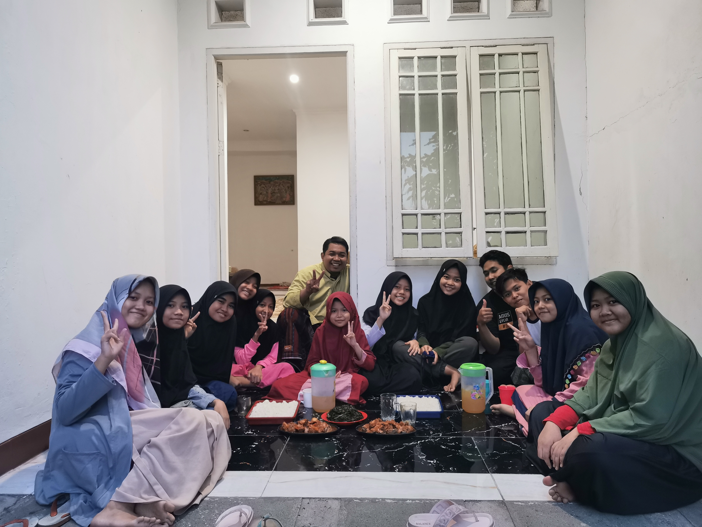
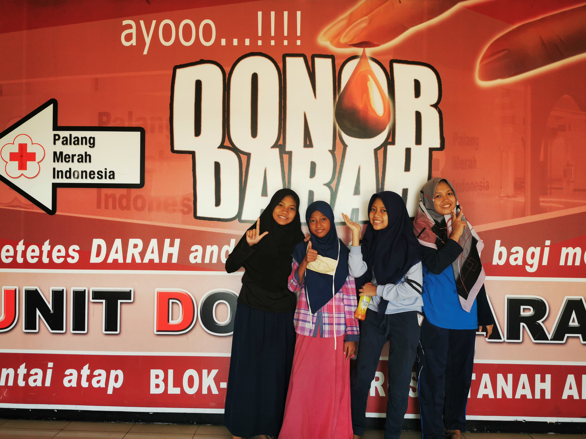
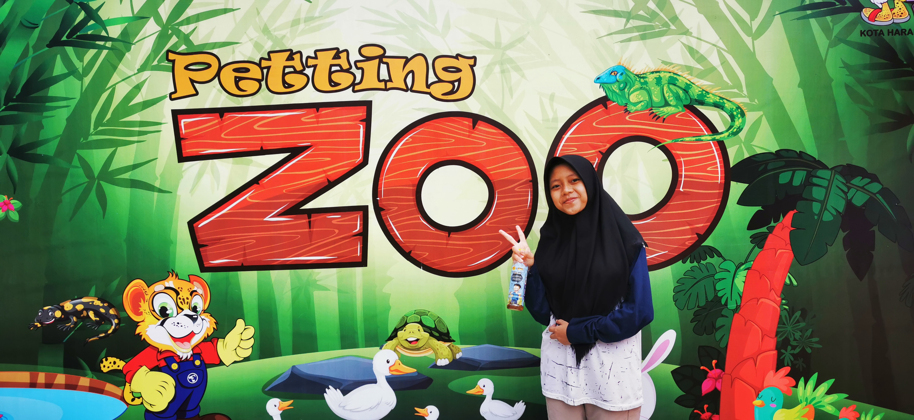
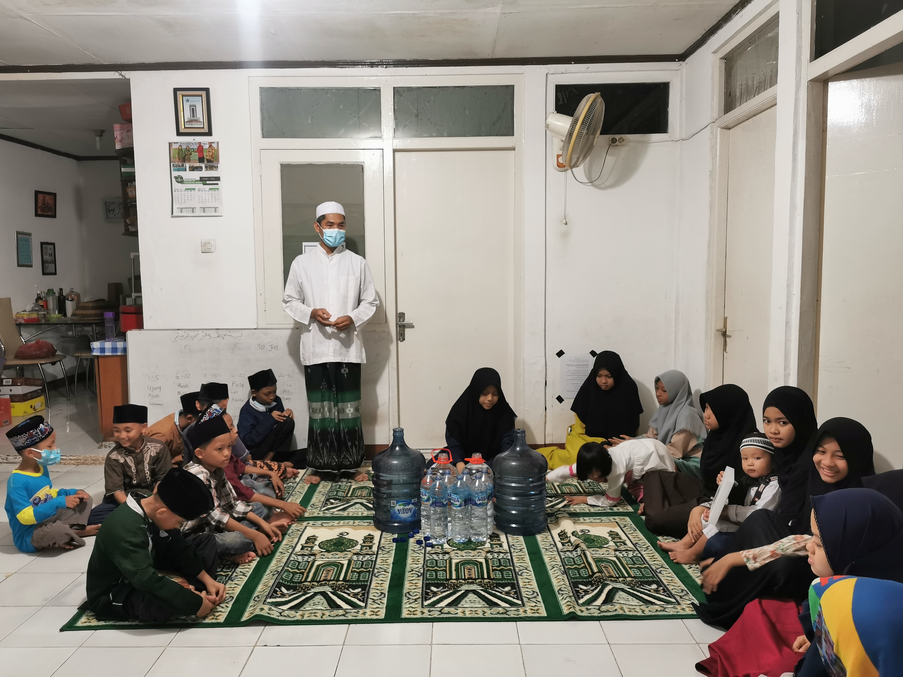
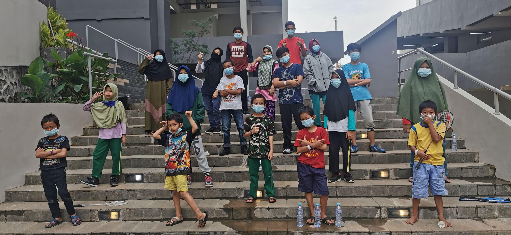

Gallery

Buka Bersama
Ini adalah salah satu foto kegiatan buka puasa yang dilaksanakan setiap hari Senin dan Kamis di pesantrenku.

Donor Darah
Ketika aku masuk pesantren banyak sekali kegiatan kemasyarakatan yang harus dilakukan oleh setiap santri. Salah satunya adalah ikut serta dalam kegiatan donor darah di Kecamatan Tanah Abang.

Tadabur
Kegiatan tadabur alam yang dilaksanakan pada akhir semester. Untuk semester kemarin pesantrenku mengunjungi kebun binatang yang ada di daerah Jawa Barat.

Khotmil Quran
Kegiatan Khotmil Quran yang diselenggarakan ketika ada santri yang telah menyelesaikan hafalannya.

Pandemi
Ini adalah moment ketika satu pesantren positif covid dan dikarangtina di Wisma Atlit.
Berlibur
Foto yang diambil ketika hari libur sekolah di Taman Mini Indonesia.